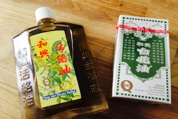
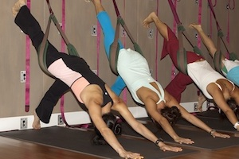
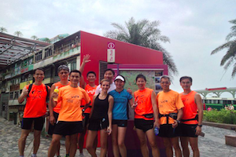

Love-hate relationship avec cette ville toujours pressée, toujours bruyante, toujours surprenante. Heureuse comme Ulysse, je ne regrette pas la foule criant en cantonais au rythme des "sorry, sorry" en vous fonçant allègrement dedans :-), mais certaines très jolies rencontres et un rythme de vie si. J'ai fait un beau voyage.
Elle est à Hong Kong

Arouse my senses !
la vue
Oui Hong Kong c'est les grattes-ciel, mais Hong Kong c'est aussi la plage ! Tai Long Wan, Shek-O breach, South beach..
A rejoindre en taxi boat, en junk ou en hikant. A savoir que le concept de hike s'applique ici à toute promenade digestive traversant du vert sur quelques centaines de mètres. Des weekends en vacances à quelques minutes de chez soi, cela n'a pas de prix.
l'odeur

Chinese Foot massage !!! Et une odeur d'huile essentielle, un peu comme le baume du tigre, accompagnée d'un thé au jasmin.
Pour soigner tous les bobos ou se détendre en sortant du boulot, mon odeur so Asia.
le son

Oh, Sinnerman, where you gonna run to? Sinnerman est un (plus ou moins) riche banquier expatrié et a attrapé la "fièvre jaune" dès la sortie de l'aéroport. Il dîne dans les restaurants étoilés (à 9pm) ou au Kebab (à 4am), il sort (beaucoup), il boit (beaucoup), il se coke (trop souvent), il ne considère pas très bien les filles (quand il est hétérosexuel), et il est ici chez lui à SinCity. Oh Lord !
le toucher

On y touche le sol, on y touche le mur, et on y touche bien souvent, volontairement ou non, son voisin : j'ai nommé, le Yoga!
La discipline de la ville, toutes les filles en font, et le couple Pure-Yoga Lulemon préside royalement. Et un clin d'oeil à la marque montante A Day with Fé.
le goût
Juteux, savoureux, aux crevettes, au porc, aux truffes, végétariens..Hmmm, des dims sums ! Et plus précisément des Xiao Long Bao.
Cuits à la vapeur dans un panier en bambou, généralement au porc et/ou à la chair de crabe, ils se remplissent de jus à la cuisson et arrivent brûlants. Il faut les saisir délicatement, les tremper dans le vinaigre, ensuite percer légèrement la peau avec les dents pour aspirer le jus en essayant de ne pas se brûler la langue (pas gagné), avant de pouvoir enfin les manger.
le guy

Il soulève des haltères, il kick-boxe, il nage, il rame, il marathonne ou il iron-manne. Qu'il soit expatrié ou local, le guy de Hong Kong est sportif.
A faire en club, mention spéciale au Work-Life Balance people en photo. J'avoue, je n'y ai pas choppé.
Pimp my eyes !
Mes jolis souvenirs

HK by night, un classique

A table!

And go veggie

Au soleil de Kowloon à Central

Souvenir de plage (début)
Souvenir de plage (fin)
Wood and skai banket, garlic smelling taxi
TTTT, great decoration shop à Wanchai

Dans les rues de Sheung Wan
A perfect junk boat day

La cinémathèque, great spot to chill out

Du bon goût des expositions (way to the office)

Peaceful Sheung Wan

C'est pas le 4 seasons non plus #onlyinHK

Le style est dans les détails

Copyright © 2014 ChloeVoyage.com - Photos protégées de droit d'auteur